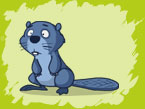
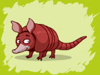
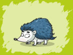

סנאי - יונק הנמנה עם משפחת הסנאיים שבסדרת המכרסמים.
קיימים למעלה מ 50 מינים של סנאים. לסנאים יש זנב ארוך ושעיר, רובם פעילי יום ושוכני יערות. הם מיומנים בטיפוס וכן בקפיצה מעץ לעץ. הסנאים בונים קנים במרומי העצים או בנקרותיהם. בקן, הבנוי מענפים וקליפות עצים, הם ישנים, גדלים ומגדלים את צאצאיהם. מזונם הוא לרוב צמחוני וכולל בלוטי אלון, אגוזים, זרעי אורן וכן פטריות וביצי ציפורים, ויש ביניהם הטורפים ציפורים זעירות.
הסנאים יכולים להזיז את שיניהם התחתונות באמצעות שריר מיוחד, ובעזרתן הם מפצחים אגוזים. בתחילה הם מכרסמים חור קטן בקליפת האגוז ולאחר מכן מכניסים לתוכו את שיניהם ומבקעים את האגוז.

ארנבת מצויה – יונק במשפחת הארנביים.
מבנה גופה של הארנבת ארוך וצר, זנבה עבה. הראש עגלגל בצורתו, האוזניים ארוכות, הרגליים האחוריות ארוכות בהשוואה לקדמיות וחזקות מהן. רגליה האחוריות של הארנבת עוזרות לה להתקדם במהירות רבה של 70 קילומטר לשעה בקירוב. היא מסוגלת לנתר למרחקים של עד 2.5 מטרים ולגבהים של 1.5 מטרים. היא טפסנית עצים וסלעים מצטיינת ומסוגלת אפילו לשחות.
הארנבת משגיחה על סביבתה בעזרת עיניה הגדולות וראייתה המכסה 360 מעלות. כאשר היא חשה בטוחה, היא עוצמת את עיניה ושוקעת בתנומה חטופה בתנוחת רביצה, אולם היא רגישה לכל צליל ותנועה, וכאשר תרגיש בסכנה תצמיד את גופה לקרקע ותקפא עד שתעבור הסכנה. הארנבת ישנה שינה מלאה לעתים רחוקות ביותר, לרוב למשך מס' דקות מעטות בלבד, אז תשכב על צידה וגופה יהיה רפוי.
הארנבת ניזונה מחומר צמחי: צמחים מזינים, עשבים, גרגירי בר, פטריות, ירקות, פירות וגידולים חקלאיים שונים להם היא לעתים מסבה נזק רב.

בונה – מכרסם גדול, סוג יחיד במשפחת הבוניים.
הבונים מבלים את רוב זמנם במים וידועים בעיקר בשל כישרונם בבניית סכרים. הבונים חיים במושבות על איים דמוי כיפה.
משקלו של הבונה הממוצע 15-20 ק"ג ואורכו כ-75 ס"מ. גופו של הבונה כבד ורגליו קצרות ואינן מותאמות להליכה, לכן הוא מבלה את רוב זמנו במים. פרוותו של הבונה עמידה בפני מים ואצבעותיו מחוברות בקרום. הבונה מסוגל לצלול במשך כ-15 דקות, באותו זמן אוטם שסתום את אזניו וחטמו. זנבו של הבונה הוא קשיח ודומה לשוט,של סירה וגם משמש לבונה כהגה. כמו לכל המכרסמים, גם לבונה זוג שיניים קדמיות חזקות וגדולות, השיניים של הבונה גדלות כל הזמן ולכן הוא חייב להשתמש בהן ללא הפסקה אחרת השיניים גדלות יותר מידי.
הבונים הם יצורים חברתיים, וחיים במושבות שמכילות לרוב מספר גדול של משפחות. כל משפחה חיה ב"קן" העשוי ממוטות וענפים. הבונים בונים ומגדילים את הקן שלהם מדי פעם. רוחבם של הקינים הגדולים ביותר שנמצאו היה 6 מטרים, וגובהם הגיע ל-2 מטרים. הבונים אינם שוקעים בשנת חורף, אבל פעילותם בעונה הקרה מצטמצמת. באביב ממליטה נקבת הבונה בין שניים לחמישה צאצאים. הם יצורים ליליים, וניזונים מעצי צפצפה וערבה.
ועוד עובדה מעניינת לסיום - לא מזמן נמצאו מאובנים של מין פרהיסטורי ועצום של בונה שגודלו היה למעלה משני מטרים. קצת מפחיד, לא?

דביבון – דביבון הוא סוג של יונק. מין הדביבון הידוע ביותר הינו הדביבון המצוי.
הדביבון גם נקרא הדוב הרוחץ משום שלפני שהוא אוכל, הוא מחפש נהר, נחל או מקור מים אחר כדי לשטוף את מזונו מספר פעמים. הדביבונים הינם אוכלי כל ופעילי לילה. הם ניזונים ממגוון רחב של דברים כולל גרגרים, חרקים, ביצים ובעלי חיים קטנים. אורכם של הדביבונים נע בין 50-100 סמ' (כולל הזנב). אורך זנבם נע בין 20-40 סמ'. מישקלם נע בין 4.5-16 קג'.
הדביבונים הזכרים בדרך כלל יותר גדולים מהנקבות. תוחלת החיים של דביבונים בשבי יכולה להמשך עד 20 שנים ואילו בטבע נדיר לראות דביבון מעל גיל 12.

שועל מצוי
מאז ימי קדם חוברו אודות השועל אגדות רבות בזכות עורמתו ופיקחותו הרבה, על אף שבטבע רוב הטורפים האחרים אינם נופלים ממנו בתבונתם.
השועל חי בשטחים פתוחים, באזורי חולות, ביער, בחורש, במדבר בנאות מדבר וליד מקווי מים.
אורך גופו של השועל המצוי 70-60 סנטימטרים, ואורך זנבו 40-30 סנטימטרים. הוא ניכר בצבע השחור שעל הצד האחורי של אוזניו. צבע הפרווה בגווני זהוב עד אדום, השועל נבדל מהכלב בסימנים אחדים: ממדיו קטנים יותר מאלה של רוב הכלבים, חרטומו מחודד והאישון שלו דמוי חריץ צר ומותאם לראיית לילה.
השועל הוא אוכל-כל ובתפריטו נכללים מכרסמים, עופות, חרקים ופירות. לשועל יש טריטוריות שגודלן תלוי בכמות המזון ובמידת פיזורו בשטח. כשהשועל מכריז על טריטוריה הוא משמיע נביחות ויללות.
השועל פעיל בלילה, ואילו ביום הוא מסתתר במחילות שחפר בעצמו או שנחפרו על ידי בעלי חיים אחרים

קנגורו
הקנגורו הינו יונק ממשפחת חיות הכיס שמוצאו (על כדור הארץ) באוסטרליה. תכונתו הבולטת של הקנגורו היא הכיס בקדמת החזה של הנקבה, שבו היא נושאת את גוריה הצעירים.
קיימים כ-45 מינים של קנגורו, הגדול ביניהם הוא הקנגורו האדום. גובהו של הזכר יכול להגיע לעתים ל-2 מטרים, ומשקלו הוא 90 קילוגרם. הקטן בהם אינו עולה בגודלו על עכבר קטן. אורך חיי הקנגרו היא 4-6 שנים.
לקנגורו יש רגליים קדמיות גדולות וחזקות, רגליים אחוריות חזקות במיוחד המותאמות לניתור, זנב שרירי ומסיבי המסייע בשמירה על שיווי משקל וראש קטן יחסית. הוא יכול להתקדם במהירות ממוצעת של 20-25 קמ"ש באמצעות ניתור. למרחק קצר הוא יכול להגיע ל-70 קמ"ש.
כמו לחיות הכיס אחרות לנקבות הקנגורו יש כיס המשמש את הגורים שלה בהתפתחות מוגנת ונוחה בתחילת חייהם. הקנגורו הוא צמחוני, אוכל עשב ושורשים, ומעלה גרה. את שעות היום החמות הוא מעביר ברביצה, בעוד שבלילה ובשעות הבוקר המוקדמות הוא עסוק בחיפוש מזון. בעת מרעה ואכילה הקנגורו הולך על כל ארבע רגליו, ואז הוא כפוף קדימה וראשו סמוך מאוד לקרקע.
בעת התגוננות או לצורך התקפה תומך הקנגורו את כל משקל גופו על זנבו החזק ובועט ברגליו האחוריות.
נקבת הקנגורו ממליטה גור אחד בכל עונת רבייה. גודלו של הגור בעת לידתו אינו עולה על 3-4 ס"מ (יותר קטן מהאצבע הקטנה שלכם), אך אף על פי כן הוא מסוגל לזחול ולהיכנס אל תוך כיס החזה של אמו מיד לאחר הלידה. בתוך הכיס יש שתי פטמות יניקה. בשלב הראשון הגור אינו חזק דיו כדי לינוק והאם מתיזה חלב אל תוך פיו. מאוחר יותר הוא לומד לינוק בעצמו.
בגיל שישה חודשים הוא מסוגל להציץ מתוך הכיס ובגיל שמונה חודשים הוא יכול לצאת לתקופות זמן קצרות ולשהות על הקרקע בקרבת אמו, ולחזור אל הכיס לאחר מכן.
פנדה ענק - מין יונק יחיד בסוגו, המסווג במשפחת הדוביים, והמצוי (על כדור הארץ) במרכז סין.
הפנדה הענק חי באזור ההרים. אורכה של הפנדה 1.5 מטר מהחרטום ועד לזנב, רגליה שחורות, גופה שחור ולבן כשהראש לבן למעט האוזניים השחורות והעיניים המוקפות בכתמים שחורים דמויי משקפיים. משקלו 165-75 ק"ג.
הפנדה ניזון כמעט אך ורק מצמחים, למעשה, הוא אוכל כמעט אך ורק חזרן . ידוע שהפנדות אוכלים גם ביצים וחרקים כחלק מתזונת החזרן שלהם. אלה הם מקורות הכרחיים לחלבון. תופעה אופיָנִית לפנדות: אוזניהם מתנועעות בזמן שהם לועסים.
לפנדה יש הבעת פנים חביבה דמוית פני תינוק. לפיכך, נפוצו גם דובי צעצוע הדומים לפנדה. העובדה שבדרך כלל מציירים אותו רוכן ואוכל בשלווה עלי חזרן בניגוד לדימוי של הדוב כצייד מוסיפה לתדמיתו התמימה.
הפנדה הוא חיה בסיכון והפך בשנים האחרונות לסמלם של בעלי החיים שנמצאים בסכנת הכחדה. הפנדה נמצא בסיכון גבוה בשל הרס בית הגידול שלו, ובגלל שקשה לו להתרבות. לפי הערכות, רק 1,000 פנדות חיים כיום בטבע.

טיגריס - יונק במשפחת החתוליים בסדרת הטורפים.
הטיגריס הוא המין הגדול ביותר בסוג פנתר: אורכו של הזכר ברוב המקרים יכול להגיע לשלושה מטרים, ומשקלו ל-225 ק"ג, כשהפרטים הגדולים ביותר בתת-המין הסיבירי יכולים להגיע לאורך של 4-3.5 מטרים ומשקל של מעל 300 ק"ג. גובהו עד הכתפיים כ-90 ס"מ וכך אורך זנבו. מראהו של הטיגריס מאופיין על ידי הפסים הכהים האנכיים (העוזרים להסוואה בעשב הגבוה) ומצויים על הפרווה שגווניה יכולים להיות מהצבעים כתום, אדום וצהוב. לכל טיגריס ישנו דגם פסים ייחודי משלו.
הטיגריס הוא טורף זריז ומיומן המיטיב לשחות ולטפס על עצים. הוא נוהג לארוב לטרפו בעיקר בשעות בין הערביים ליד מקווה מים ביער, שאליו מגיעות החיות כדי לשתות. בארוחה אחת יכול הטיגריס לבלוע עד 40 ק"ג בשר.כשהוא אינו משחר לטרף, הטיגריס יושב בדרך-כלל בצל או בבריכות מים כדי להתקרר.
בגלל פרוותו המרהיבה, ובגלל אמונה שאיבריו עוזרים לבעיות רפואיות ניצוד הטיגריס בכמויות גדולות והמין נמצא היום בסכנת הכחדה.

ארמדיל - יונק הידוע בשריון הגוף שלו. אורכו הממוצע של ארמדיל הוא כ-75 ס"מ, מראש ועד קצה הזנב.
הארמדיל מקורב לדוב הנמלים. ישנם מספר מינים של ארמדיל, הנבדלים זה מזה במספר הפסים הנראים בשריונם, ובמאפיינים אחרים.
מקום מחייתם הטבעי של כל מיני הארמדיל על כדור הארץ הוא ביבשת אמריקה, שם הם חיים בסביבות שונות. הארמדילים ניזונים בעיקר מחרקים, מזחלים, ומחסרי חוליות אחרים.
הארמדיל נוהג לחפור הרבה, והוא משתמש בציפורניו החדות כדי לחפור הן לצורך מציאת מזון, והן לצורך בניית מאורות באדמה לחה, בדרך כלל בצד פלגים או נחלים שבקרבתם הוא חי.
ההגנה העיקרית של הארמדיל היא עורו החיצוני, המהווה שריון. טקטיקות ההישרדות של מיני ארמדיל שונים נבדלות זו מזו עד מאוד. מול איומו של טורף, הארמדיל בעל 3 הפסים מדרום אמריקה יתכרבל לצורת כדור. לעומתו, הארמדיל בעל 9 הפסים מצפון אמריקה נוהג לקפוץ גבוה לאוויר כשהוא מופתע.
בעונת החיזור נוהג הארמדיל הזכר לעשות סלטות באוויר כדי לזכות בתשומת-ליבה של הנקבה. לעתים קורה שהוא נוחת על ראשו, ואף שהדבר לא גורם נזק, הוא בהחלט מקטין את סיכוייו לזכות להזדווג עם הארמדילה שאחריה הוא מחזר.
הארמדילים משמשים במחקר המדעי גם בשל מערכת הרבייה המוזרה שלהם: בכל המלטה נולדים תמיד ארבעה ארמדילים זהים מבחינה גנטית. היות שהם תמיד זהים, רביעיות הארמדילים שימושיות למחקרים מדעיים, התנהגותיים ורפואיים הדורשים קבוצות של נבדקים ללא הבדל גנטי. החשיבות הגבוהה של הארמדיל למחקרים נובעת מהעובדה שמלבד הארמדיל אין אף יונק אחר למעט האדם אשר עשוי להמליט תאומים זהים מבחינה גנטית.

קיפוד - הקיפוד הוא בעל חיים מסדרת אוכלי החרקים, באורך ממוצע של 20 ס"מ.
גבו של הקיפוד מכוסה בקוצים, וכאשר הוא חש מאויים הוא מתכדרר לכדור ומפנה את קוציו החוצה. הקולות שקיפוד משמיע הם של חירחור ואינפוף, ולעתים (כמו במקרי מצוקה) גם צרחות המזכירות יללות חתול.
הקיפודיים חיים תחת בולי עץ או במאורות שהם חופרים בעצמם. הם ניזונים ממגוון רחב של מזונות, הכולל חסרי חוליות, זוחלים, פגרים, שורשים ופירות. הם חסינים לרעלנים שונים הקיימים בטבע, ביניהם ארס נחשים.
תקופת ההריון של הקיפודה נמשכת 58 יום. קיפודים חיים בדרך כלל 4-7 שנים בטבע, אולם ידוע גם על קיפודים שהאריכו ימים עד גיל 16.
הקיפודיים פעילים בשעות הלילה ומספר מינים אף מקיימים תרדמת חורף. הם הטרותרמיים, כלומר מורידים את טמפרטורת גופם בשעת מנוחה, אך הם בעלי דם חם. הם מנהלים את חייהם על פני האדמה, אך ניתן לראותם גם מטפסים ושוחים בהצלחה יתרה.
הקיפודים מסוגלים להתרבות פעמיים בשנה. במרבית המינים, זהו הזמן היחיד בו הפריטים המבוגרים מנהלים התנהגות חברותית, כאשר ביתר הזמן הם יצורים מתבודדים.
מבין היונקים החיים בימינו, בני משפחה זו הם הדומים ביותר ליונקים הקדומים. מאובנים של משפחה זו מוכרים החל מתקופת האיאוקן הפרה-היסטורית.